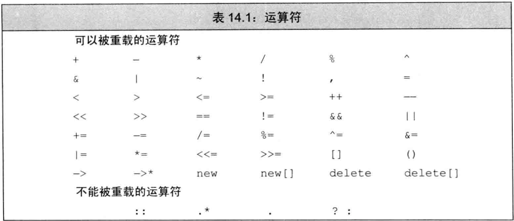
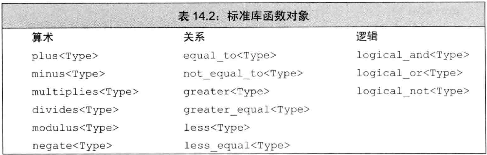
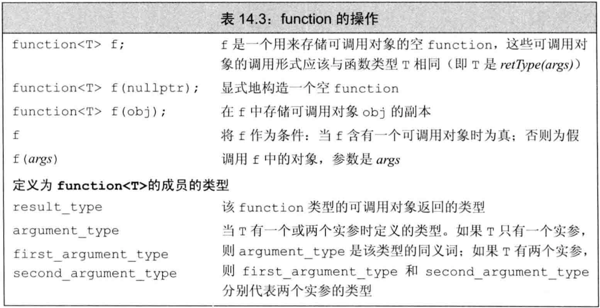

C++ primer 第14章 重载运算与类型转换
文章目录
- 当运算符被用于类类型对象时，可利用运算符重载为其指定新含义（以提升可读性）
- 可自定义类类型之间的转换规则
基本概念
重载的算符是特殊的函数：名字由关键字operator后接要定义的算符共同组成，也有返回类型、参数列表、函数体。- 重载算符函数的参数量与该算符作用的运算对象数量一样多
- 除重载调用算符
operator()外，其他重载算符不能有默认实参 - 若一个重载算符是成员函数，则其第一个运算对象（左侧对象）隐式绑定到该类的
this指针上。故成员函数的显式参数数量比运算对象数量少1 - 不可重载内置类型的算符。即，重载算符或者是类的成员，或者至少有一个类类型参数
- 可重载的算符见表14.1 
- 只能重载已有的算符，不可发明新的算符
+、-、*、&这4个既可是一元算符也可是二元算符，都可被重载，根据参数数量判断是哪种。- 重载算符的
优先级和结合律与对应的内置算符一致，但求值顺序和短路求值不会被保留 - 可用算符形式调用重载算符，也可直接用函数名
- 例子：可用函数名调用重载算符
|
|
- 不建议重载的算符：
&&、||、,的求值顺序不会被保留（因为算符重载本质是函数调用）&&、||的短路求值不会被保留,、&这两种算符对类类型对象有特殊含义，不建议重载
- 如果某些操作在逻辑上与算符相关，适合重载：
- 执行IO操作的类，重载
<<、>>以和内置类型的IO操作一致 - 检查相等性的类，重载
==，同时也需重载!= - 单序比较操作的类，重载
<，同时也需重载<=、>、>= - 重载算符的返回类型通常应与内置版本兼容：逻辑算符和相等算符返回bool，算术算符返回类类型的值，赋值算符和复合赋值算符返回左侧对象的引用
- 如果类重载了算术算符或位算符，则最好也提供对应的复合赋值算符
- 执行IO操作的类，重载
- 选择将算符定义为成员/非成员：
=、[]、()、->必须是成员- 复合赋值算符一般是成员，但非必须
- 改变对象状态的算符或与给定类型密切相关的算符（如
++、--、*等）通常应该是成员 - 具有对称性的算符（如算术、相等性、关系、位）可能转换任意一侧的对象，通常不应该是成员
- 把算符定义为成员函数时，其左侧对象必须是该类的一个对象
- 例子：成员函数算符的左侧必须是该类对象
|
|
输入和输出运算符
- IO库用
>>和<<来执行输入和输出，IO库定义了读写内置类型的版本，类需自定义它们以支持IO
重载输出运算符
- 通常
输出算符的参数和返回值：- 第一个参数是非常量ostream对象的引用。非常量是因为向流写内容会改变流，引用是因为ostream不可拷贝
- 第二个参数一般是常量引用。常量是因为打印不改变对象内容，引用是因为避免拷贝
- 返回值是它的ostream形参的引用（以便重复打印）
- IO算符左侧是iostream，故它们必须是
非成员函数（iostream类型不可被用户改变） - IO算符经常要读写类的非公有成员，故一般声明为
友元 - 例子：重载输出算符
|
|
重载输入运算符
- 通常
输入算符的参数和返回值：- 第一个参数是要读取的非常量istream对象的引用。非常量是因为读取也会改变流的状态
- 第二个参数是将读入的非常量对象的引用。非常量是因为要写入该变量，引用也是因为要写入该变量
- 返回值是它的istream形参的引用（以便重复读取）
- 输入算符必须处理
输入流可能无效的情况（因为输入会改变程序中的变量，无效流导致读入未定义的数据），而输出算符不需要- 流含有错误类型的数据时读取操作可能失败
- 读取操作到达文件末尾或遇到输入流的其他错误时也会失效
- 检查输入流是否有效应该在读完后使用前检查，不应在读之前检查（否则无法检查读取过程中发生的错误）
- 若在发现错误时对象已经被输入流改变，则改变部分是未定义的值。需要将对象重置为合法的（确定的）状态。
- 重载输入算符中若读到了不符合用户需求的格式，也可手动设置输入流的
failbit。 - 例子：重载输入算符
|
|
算术和关系运算符
- 通常将算术和关系算符定义为
非成员，以允许对左侧或右侧的变量做类型转换。 - 参数和返回值：
- 形参都是常量引用，因为不需要改变对象状态
- 返回值是非引用，经常是在函数内定义局部变量作为结果返回
- 若类定义了算术算符，一般也应该定义复合赋值算符，且应该用复合赋值算符实现算术算符（
算术算符比复合赋值算符多一次拷贝） - 例子：用复合赋值算符实现算术算符
|
|
相等运算符
- 类通过相等算符来检验两个对象是否相等
- 相等算符的设计准则：
- 定义相等算符可更容易地使用标准库容器/算法
- 若类定义了
==，则可判断一组对象中是否有重复的 - 相等算符应该有
传递性，即由a==b和b==c可推出a==c - 定义了
==的类也应该定义!= ==和!=中的一个应该把工作委托给另外一个（可保证两个对象不是相等就是不等）
==和!=应该返回bool类型
- 例子：定义==和!=
|
|
关系运算符
- 定义了相等算符的类经常（但非必须）定义关系算符
- 关联容器和一些算法会用到
operator<，它比较有用 - 关系算符的设计：
- 定义
顺序关系，这种关系与关联容器中对关键字的要求一致 - 若类也有
==，则定义的关系应与==保持一致，即关系算符定义的等价类应与相等算符定义的等价类一致，即若两个对象都不小于对方，它们应该相等 - 若不存在唯一的无歧义的
<，则不定义<更好
- 定义
赋值运算符
- 除
拷贝赋值算符和移动赋值算符外，类还可定义其他赋值算符以使用其他类型作为右侧对象。但不需要考虑自赋值问题，因为类型不同。 - 赋值算符必须定义为
成员函数，无论形参类型是什么。复合赋值算符也通常（不必须）定义为成员 - 赋值算符和复合赋值算符都应返回左侧对象的引用（对成员函数而言是
*this） - 例子：vector定义赋值算符用于列表初始化
|
|
下标运算符
容器类经常可通过元素的位置来访问元素，这些类一般需要下标算符[]- 下标算符必须是
成员函数 - 参数和返回值：
- 通常返回所访问元素的引用，这样可允许下标操作出现在
=的左侧或右侧 - 通常定义const和非const两个版本，作用于const对象的版本其返回值也应该是const
- 通常返回所访问元素的引用，这样可允许下标操作出现在
- 例子：定义下标算符
|
|
递增和递减运算符
- 迭代器类通常需要实现
++和--，使迭代器类可在元素序列中前后移动。 - 递增递减算符建议（非必须）设为
成员函数，因为它们改变操作对象的状态 - 递增递减算符同时存在前置版本和后置版本，它们应该被同时定义。
前置版本实现递增/递减操作，并返回对象本身（返回引用）后置版本实现递增/递减操作，并返回操作前的对象的拷贝（返回值）（需在操作前就拷贝）
- 前置版本和后置版本名字相同无法区分（返回类型不同不算重载），因此使后置版本接受一个额外的
int形参以区分，该形参的唯一作用是区分前置/后置因此不需命名，使用后置时编译器为它自动赋值为0 - 后置版本只是比前置版本多一次拷贝且返回值不同，故应该用前置版本来实现后置版本
- 例子：定义前置/后置的递增/递减
|
|
- 可显式调用重载的递增/递减。调用后置版本时需给int传参
- 例子：显式调用时用实参选择前置/后置
|
|
成员访问运算符
- 迭代器类或智能指针类中常用到解引用算符
*和箭头算符-> ->必须是成员函数，*经常也是成员函数（非必须）*和->是作用在指针上，访问底层对象，不改变指针本身，因此常定义为const函数- 理论上可让
*做任何事，但->只能用于获取成员。且->的工作经常委托给*来实现 - 对于表达式
point->mem，point必须是指向类对象的指针，或是重载了->的对象：- 若point是指向类对象的指针，则等价于
(*point).mem。 - 若point是重载了
->的对象，则等价于point.operator->()->mem。
- 若point是指向类对象的指针，则等价于
- 因此
operator->()应该返回一个指向类对象的指针，或是另一个重载了->的对象 - 例子：重载*和->
|
|
函数调用运算符
- 若类重载了函数调用算符，则可以像使用函数一样使用类的对象，它比普通函数更灵活
- 函数调用算符必须是
成员函数。一个类可定义多个调用算符，相互之间应在参数数量/类型上区分 - 若类定义了调用算符，则称该类对象为
函数对象 - 函数对象经常用作标准库算法的实参（类似lambda）
- 例子：定义调用算符
|
|
lambda是函数对象
- 编写lambda后，编译器将lambda翻译为一个匿名类的匿名对象。
- lambda产生的匿名类中含有一个重载的函数调用算符，且形参列表和lambda的形参列表一样
- 默认lambda不可改变捕获的变量，故其中重载的调用算符是const函数。除非将lambda声明为
mutable - 例子：lambda产生匿名类
|
|
- 两种捕获:
引用捕获：编译器直接使用，不需存储数据成员。程序负责保证引用的对象存在值捕获：对象被拷贝到lambda中，在生成的函数对象中为值捕获的变量建立成员，同时创建构造函数用初值列表初始化它们
- lambda产生的类不含默认构造函数、赋值算符、默认析构函数，它是否含有默认拷贝/移动构造函数通常取决于捕获的数据成员
- 例子：值捕获的lambda
|
|
标准库定义的函数对象
- 标准库定义了一组表示算术、关系、逻辑算符的类，每个类分别定义了一个执行命名操作的调用算符
- 这些类都是模板，可为其指定应用的类型，即调用该算符的形参类型
- 例子：使用标准库定义的函数对象
|
|
- 标准库定义的这组函数对象定义于
functional头文件，见表14.2：  - 表示算符的函数对象类常用于替换标准库算法中的默认算符（类似lambda）
- 直接用算符比较指针是未定义，但可用标准库的函数对象来比较指针
- 例子：可用标准库函数对象比较指针
|
|
可调用对象与function
- C++中
可调用对象的种类：函数、函数指针、lambda表达式、bind创建的对象、重载了函数调用算符的类 调用形式指明了调用返回的类型以及传递给调用的参数类型，一种调用形式对应一个函数类型。不同类型的可调用对象可共享同一种调用形式- 例子：不同类型的可调用对象共享调用形式
|
|
- 有时候希望将共享调用形式的可调用对象看成同一种类型的对象。例如定义
函数表用于存储指向一些可调用对象的指针，程序需要某个可调用对象时从表中查找该对象 - 函数表可用map实现，key是string，value是可调用对象的指针。但这些指针类型各不相同，无法确定map的类型
- 使用名为
function的标准库类型可将调用形式相同的不同类型可调用对象统一表示，它定义于functional头文件，操作见表14.3：  - function是模板类，其模板参数是它能表示的调用形式（对应的函数类型）
- 可将不同类型的可调用对象存入同类型的function中，只要它们调用形式相同
- function类型重载了调用算符，该算符将其接受的实参传递给底层的可调用对象
- 例子：不同类型的可调用对象存入同类型的function
|
|
- 例子：用function类定义函数表
|
|
- 若存在重载函数，则function不能识别是哪一个，即使存在调用形式相同的函数也不行。但定义函数指针时可识别是哪个函数，也可在lambda中调用函数来区分
- 例子：function不能识别重载函数
|
|
- C++11的
function和旧版本的unary_function、binary_function并无关联，后两者已经被更通用的bind函数替代
重载、类型转换与运算符
- 用户定义的类型转换：
转换构造函数：由一个实参调用的非explicit构造函数定义类型转换，将实参类型转换为该类类型类型转换算符：重载的算符，将该类类型转换为指定类型
类型转换运算符
- 类型转换算符是一种特殊的
成员函数，负责将该类类型转换为其他类型。 - 类型转换算符的定义形式为
operator type() const，其中type表示要转换为的类型。 - 类型转换算符可对除
void外的任何类型定义，只要该类型可作为函数的返回类型（因为用return实现）。故不转换为数组或函数，但可转换为它们的指针/引用 - 类型转换算符没有显式的返回类型，也没有形参，且必须定义为成员函数。通常不应该改变原对象的内容（拷贝而非移动），故经常定义为const
- 编译器一次只能执行一个自定义的类型转换，但一个隐式的自定义类型转换可与一个隐式的内置类型转换一起使用。
- 类型转换隐式执行，故类型转换算符都没有形参
- 类型转换算符的返回类型不需要指定（蕴含在函数名中）
- 例子：定义类型转换算符
|
|
- 若在类类型和要转换的类型之间没有明显的映射关系，最好不要定义转换算符
- 实践中，类很少提供转换算符。隐式转换发生时用户可能感到意外而不是被帮助
- 定义转为
bool的转换算符比较普遍，经常用于条件判断场合 - 为类定义转为bool的转换算符存在的问题是：bool可参与算术运算，可能引发意想不到的结果
- 例子：定义转为bool的类参与算术运算（反例）
|
|
- 防止上述异常，C++11引入
显式类型转换算符，即在类型转换算符前使用explicit关键字，只允许用强制转换方式实现类型转换 - 若表达式用作条件，则编译器将显式的类型转换自动应用于该表达式（即忽略explicit）：
- if/while/do语句的条件部分
- for语句头的条件表达式
- 逻辑非
!、逻辑与&&、逻辑或||的运算对象 - 条件算符
?:的条件表达式
- 实现转为bool但避免算术运算的方法：
- C++11中：将向bool转换的转换算符定义为
explicit。变量单独放于条件中会自动忽略explicit - 旧标准中：定义向
void *而非bool的转换算符。void *也可用于判断，但不会参与算术运算
- C++11中：将向bool转换的转换算符定义为
operator bool经常被定义为explicit的
避免有二义性的类型转换
- 若类中包含一个或多个类型转换，则必须确保在该类类型和目标类型之间只存在唯一的转换方式，即无二义性
- 两种情况下可能产生
二义性：- 两个类定义了作用相同的类型转换，例如：A定义了接受B类型的转换构造函数，同时B定义了向A转换的转换算符
- 类定义了多个转换算符，而这些转换目标的类型又能相互转换，例如：类定义了转换为int的算符，又定义了转换为short的算符，而实际需要一个double类型
- 不要为多个类定义相同的类型转换，不要为类定义多个转换源或转换目标是算术类型的转换
- 对于多个类定义相同类型转换的二义性，解决方式是显式调用函数。显式转换无法解决，因为显式转换也面临二义性
- 例子：为多个类定义相同的类型转换（反例）
|
|
- 对于类定义了多个转换算符，而这些转换目标的类型又能相互转换的情形，二义性的根本原因是它们所需的内置转换级别一致
- 使用自定义的转换算符时，若转换过程包含内置转换，则内置转换的级别决定选择哪个转换算符作为最佳匹配
- 例子：内置转换的级别决定选择哪个转换算符
|
|
- 设计类的重载算符、转换构造函数、类型转换函数时，必须小心。类同时定义了类型转换算符和重载算符时很容易二义性。
- 不要让两个类实现相同的类型转换
- 避免转换目标是内置算术类型的转换算符
- 定义了转为算术类型的算符时，不要再定义接受算术类型的重载算符
- 定义了转为算术类型的算符时，不要定义转换到多种算术类型的转换算符
- 除了explicit地转换为bool的算符外，应尽量避免定义类型转换算符，并尽可能限制那些“显然正确”的非explicit构造函数
- 调用
重载函数时，从多个类型转换中进行选择将更加复杂。若两个或多个类型转换都提供了同一种可行的匹配，则这些转换一样好 - 调用者可显式构造正确的类型消除二义性
- 若在调用重载函数时，需要使用
显式构造函数或强制类型转换来改变实参类型，通常意味着程序设计存在不足 - 例子：从多个类型转换中选择重载函数
|
|
- 调用重载函数时，若两个或多个自定义类型转换都提供了可行匹配，则它们提供的转换一样好。此时不考虑任何内置类型转换的级别。
- 只有所有可行函数能通过同一个自定义类型转换得到匹配时，才会考虑其中出现的内置类型转换
- 若调用重载函数所请求的自定义类型转换不止一个，即使其中一个需要额外的内置类型转换而另一个精确匹配，它们也是二义性的。（本质原因是，对于自定义类型转换之间的差异而言，内置类型转换的差异可以忽略）
- 例子：调用重载函数所请求的自定义类型转换不止一个时一定是二义性
|
|
函数匹配与重载运算符
- 重载的算符也是重载的函数，故通用的函数匹配规则也适用于判断表达式中使用哪个算符。
- 算符出现在表达式中时，候选函数集会比较大，例如
a sym b可能是：- 内置算符
sym - 重载的非成员函数，即
operatorsym(b) - 重载的a的成员函数，即
a.operatorsym(b)（当a出现在左侧时才有可能）
- 内置算符
- 显式调用一个命名的函数时，具有该名字的成员函数和非成员函数不会彼此重载，因为会用
.或->来显式说明是成员。但算符无法被这样区分。 - 若对同一个类，既提供了转换源和转换目标是算术类型的转换，又提供了重载的算符，则会遇到
重载算符与内置算符的二义性问题 - 例子：重载算符和内置算符的二义性（反例）
|
|